地政学
モスクワは内陸国家ロシアの政治中枢であり、クレムリン、外務、防衛、鉄道結節、空港群が国土を束ねます。欧州、中央アジア、北極圏、黒海方面への回廊を見渡す首都として、祝祭や式典も地政学を帯びます。今日も強く。

🇷🇺 ロシア / ヨーロッパ / World City Atlas
国家権力、放射環状の都市骨格、正教とソ連記憶、冬の気候が重なるロシア最大の首都圏。
都市の骨格
クレムリンを中心に放射状の幹線と環状道路、鉄道、地下鉄が重なり、政治権力と日常移動を同じ地図に刻む。
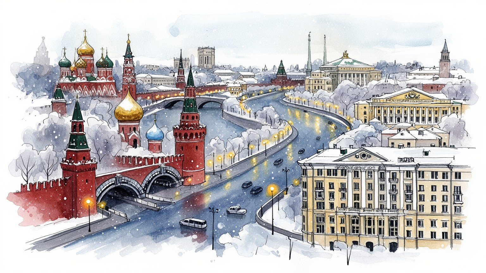
モスクワは内陸国家ロシアの政治中枢であり、クレムリン、外務、防衛、鉄道結節、空港群が国土を束ねます。欧州、中央アジア、北極圏、黒海方面への回廊を見渡す首都として、祝祭や式典も地政学を帯びます。今日も強く。
行政、エネルギー企業、金融、IT、軍需、大学、メディアが集中し、雇用は専門職から建設、清掃、配送、市場の店員まで幅広いです。制裁下では輸入代替、決済、人材流出、路上経済の変化が課題になります。日々揺れます。
正教の聖堂、劇場、音楽院、美術館、文学の記憶、ソ連期の記念碑が重なり、帝国、革命、戦争、現代国家を語ります。劇場帰りの夜、祝祭、スポーツの熱気も、市民生活と権力表象をつなぎます。深く続きます。今も。
地下鉄、郊外団地、河岸公園、商業施設、市場が日常を支え、観光客は赤の広場、劇場、聖堂、ルジニキを巡ります。冬の通学や高齢者の移動、移民労働、買い物の匂いも首都の実感です。濃く響きます。朝夜にも街に。
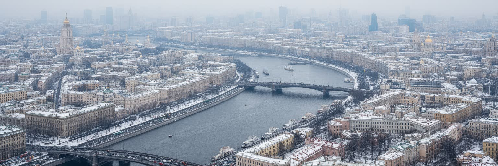
モスクワは海港都市ではなく、内陸の高台とモスクワ川の湾曲、鉄道、道路、地下鉄によって成長した首都です。中心にはクレムリンと赤の広場があり、そこから放射状の道路が郊外へ伸び、複数の環状道路が都市を輪のように囲みます。鉄道駅は方角ごとに国土の別々の地域へ向かい、空港群は欧州、シベリア、コーカサス、中央アジアへの移動を担います。川は大河ではありませんが、河岸の再整備、公園、橋、倉庫跡、政府施設を結び、都市の記憶を読み取る線になります。放射環状の構造は単なる交通計画ではなく、中央へ向かう政治と行政の重心を可視化しています。郊外の住宅団地から中心業務地区へ通う人びとは、地下鉄と近郊鉄道を乗り継ぎ、巨大首都の日常的な距離を体で測ります。道路混雑、冬の雪、河川沿いの開発、緑地の保全は、成長した都市圏が抱える管理課題です。モスクワを見るには、華やかな中心だけでなく、環状道路の外側に広がる通勤圏と物流の動きを合わせて追う必要があります。環状道路の外側には倉庫、工場跡、新しい集合住宅、郊外型商業施設が点在し、中心へ集まる人と物の流れを受け止めます。川沿いの遊歩道が観光的に整えられる一方で、橋や幹線道路は軍事、行政、物流の動脈でもあり、都市の美しさと管理の強さを同時に示しています。都市の形そのものが、中央集権と広大な国土を結ぶ首都の性格を語っています。
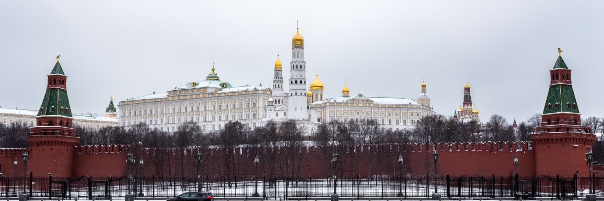
モスクワの中心性は市場規模だけでなく、国家の意思決定が集中することから生まれます。大統領府、政府機関、省庁、議会、裁判所、国営企業、主要メディアが近い距離に集まり、政策、予算、安全保障、外交の判断が都市の空気を左右します。クレムリンと赤の広場は観光名所であると同時に、戦勝記念日、軍事パレード、追悼、祝祭の舞台でもあります。独立系メディアや国営メディアの距離感は、情報を得る日常にも影を落とします。権力の近さは投資や雇用を呼び込むが、政治的な発言、報道、市民運動への制約も強めます。中心部の再整備や歴史的景観の保存は、どの記憶を公式に前面へ出すのかという選択を含みます。国家中枢の街では、警備、交通規制、監視、式典が日常の動線に入り込み、住民と訪問者は権力の存在を物理的に感じます。官庁に近いカフェでは新聞とスマートフォンの見出しが慎重に読まれ、学校や職場でもニュースの話題は相手を見て選ばれます。式典の日には地下鉄の導線、露店の菓子、記念品を持つ家族連れまでが特別な緊張と高揚を帯びます。広場の装飾、警備車両、テレビ中継の視線までが、首都では政治的な意味を帯びます。モスクワを首都として読むことは、建物の豪華さだけでなく、行政が人びとの移動、情報、集会、仕事にどう触れているかを読むことです。今もです。
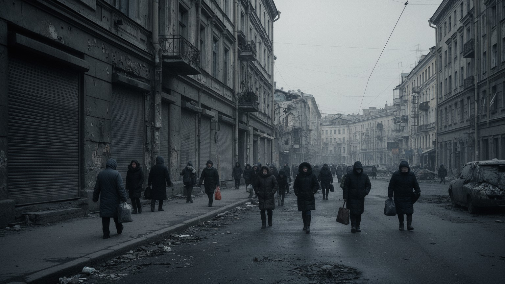
近年の戦争と国際制裁は、モスクワの経済、文化、移動、情報環境を大きく変えています。海外企業の撤退、航空路の制限、金融決済の迂回、輸入品の不足、価格上昇は、中心部の店舗や家計の買い物にも波及します。かつて見慣れたブランドの看板が替わり、商業施設では国内ブランドや友好国経由の商品が並びます。市場では値札の変化に客が敏感になり、代替品を探す会話が果物、薬、子どもの学用品の前で交わされます。一方で、国家発注、防衛関連、輸入代替、国内決済、物流の組み替えは新しい仕事も生みます。徴兵、戦死者、避難や移住、反戦的な発言への圧力は、家族や職場、大学、文化機関に静かな緊張をもたらします。独立メディアに触れる人、国営テレビを見続ける人、沈黙を選ぶ人の間で、同じ食卓の会話にも慎重さが増します。劇場の演目、大学の講義、スポーツ観戦の会話でも、どこまで口にするかを測る空気があります。制裁は都市を一気に止めるのではなく、部品調達、研究協力、旅行、留学、金融、医薬品、文化交流を少しずつ難しくします。広告や商品棚が埋まっていても、選択肢の質と将来設計は以前と同じではありません。平穏に見える大都市の表面ほど、家族単位の不安や進路変更を隠しています。夜の店先の明るさと、会話の声量の低さが同居します。静かに続いています。
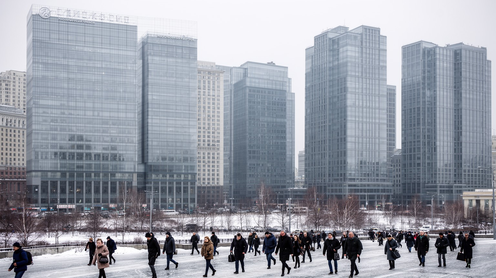
モスクワの富は、周辺で掘られる資源ではなく、国土各地の石油、天然ガス、鉱物、電力、鉄道、通信、金融を管理する本社機能によって集まります。エネルギー企業、国営銀行、保険、証券、法律、会計、コンサルティング、IT企業が首都に集中し、資源収入を都市のオフィス、住宅、商業、文化へ変換します。高賃金の専門職は中心部の消費を押し上げ、レストラン、教育、医療、不動産市場を厚くします。一方で、制裁下の金融は外貨決済、投資、海外調達で制約を受け、国内市場や友好国との取引に重心を移します。エネルギー依存は財政を支える力であると同時に、価格変動、脱炭素、地政学リスクに左右される弱さでもあります。首都のオフィス街だけを見ると高度なサービス経済が目立つが、その背後には遠い油田、パイプライン、港、鉄道、労働者の生活があります。モスクワは資源を持つ地方を管理し、そこから生まれる富を配分する都市でもあります。豊かさの集中は公共投資を可能にする一方、地方との格差や中心部の住宅費を広げるため、経済力は社会的な緊張も伴っています。金融や能源企業の役員、官僚、技術者が近い距離で動くことは政策の速度を上げるが、競争より関係性が重視される不透明さも生みます。都市の豪華さは、資源経済の恩恵と限界を同時に映しています。資源の価格が変われば、遠い産地だけでなく首都の雇用、税収、消費にも波が届きます。
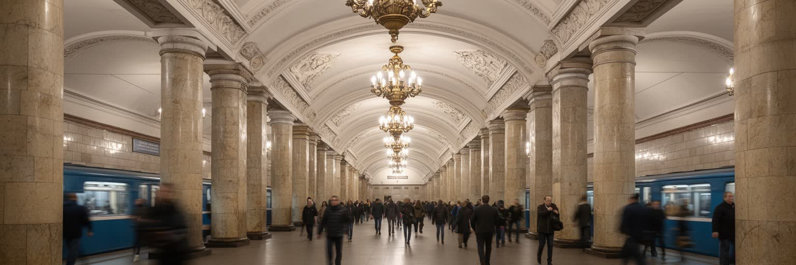
モスクワ地下鉄は、移動手段であると同時に都市の象徴です。宮殿のような駅、戦時下の避難空間としての記憶、社会主義の装飾、現代的な新線が重なり、地下の空間だけで都市の歴史を歩けます。地上では環状道路と放射状道路が混み合うため、地下鉄、近郊鉄道、バス、トラム、配車サービスは膨大な通勤を支える基盤になります。新しい環状線や郊外への延伸は、遠い住宅団地から中心部への時間を短くし、商業施設や住宅開発を誘導します。冬の朝、子どもは厚い帽子で学校へ向かい、高齢者は凍った歩道を避けて駅の近い経路を選びます。豪華な駅空間は観光客を引きつけるが、通勤者にとっては乗換え、混雑、改札、警備、広告が毎日の風景です。駅前のキオスクでは新聞、花、焼き菓子、携帯用品が売られ、短い買い物が通勤の流れに挟まります。夜遅くの列車には劇場帰りの客、勤務を終えた店員、音楽クラブへ向かう若者が混ざり、地下鉄の低い走行音が都市の夜をつなぎます。終電前のホームには香水、湿ったウール、紙コップのコーヒーの匂いが漂います。雪の湿った匂い、濡れたコート、エスカレーターの金属音も、冬の移動を身体に残します。交通カード、監視カメラ、警備員は便利さと管理を同時に示します。移動の効率は自由を広げるが、巨大な都市をさらに外へ広げる力にもなります。今日も。
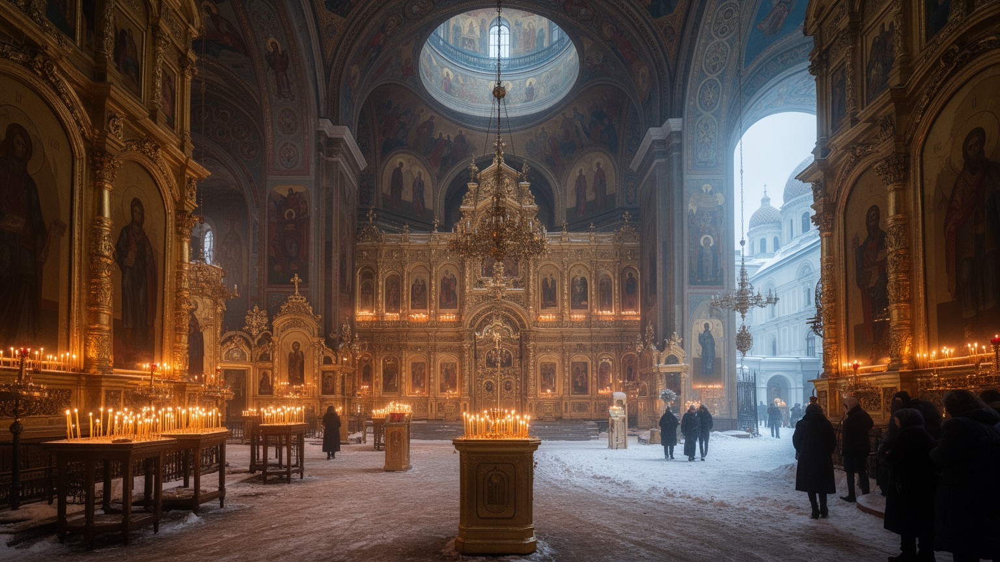
モスクワの宗教景観では、ロシア正教の聖堂、修道院、鐘楼、イコン、祭礼が大きな存在感を持ちます。帝政期の信仰、ソ連期の弾圧と世俗化、現代の復興と国家との接近が重なり、聖堂は祈りの場であると同時に歴史認識をめぐる象徴にもなります。復活した教会や新しく建てられた聖堂は、都市のスカイラインと公共空間に宗教的な記号を戻しています。信者は洗礼、結婚、葬儀、復活祭、クリスマス、聖人祭を通じて共同体をつくり、教会は慈善や教育にも関わります。一方で、イスラム教徒、ユダヤ教徒、仏教徒、無宗教の人びともモスクワに暮らし、多宗教都市としての調整も必要です。正教は文化遺産として観光化されるだけでなく、政治的な言説や道徳教育にも影響を持ちます。信仰の復興は失われた記憶を取り戻す行為である一方、国家的な一体感を強める道具として使われることもあります。聖堂の金色のドームを眺める時、その美しさの背後に、帝国、革命、戦争、弾圧、再建の時間が折り重なっていることを意識する必要があります。礼拝に向かう人、観光客、警備員、近隣住民が同じ境内を通ることで、聖なる空間は日常の都市空間にもなります。宗教の近さは慰めであると同時に、国家が価値観を示す舞台にもなります。祈りの言葉と政治的な言葉が近づく時、聖堂は個人の信仰を超えた公共的な意味を帯びる場所となるのです。今も続きます。
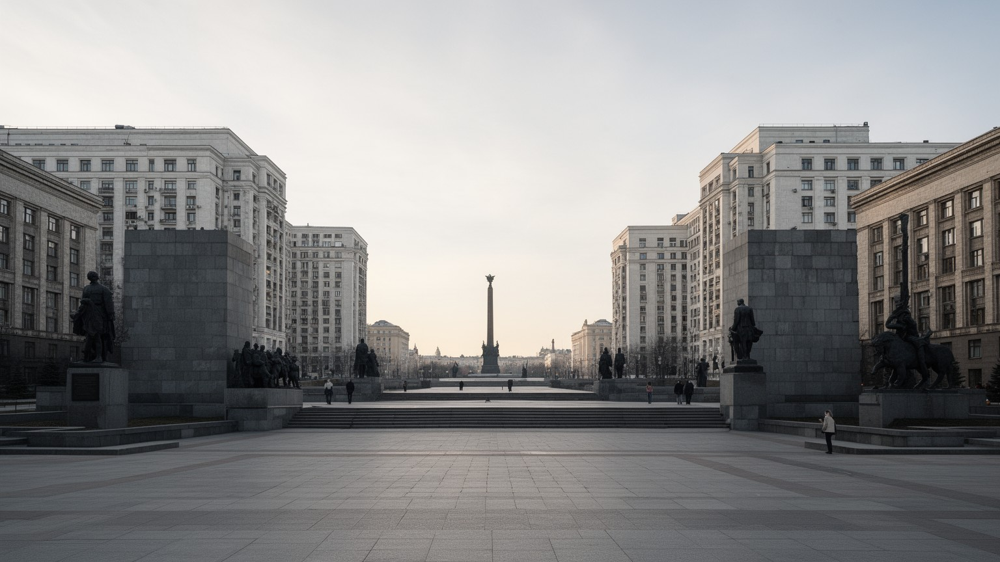
モスクワには、帝政ロシアの都としての記憶だけでなく、革命、社会主義建設、第二次世界大戦、宇宙開発、冷戦の記憶が濃く残ります。スターリン様式の高層建築、広い大通り、記念碑、戦勝記念施設、地下鉄の装飾、集合住宅、展示場は、国家が近代化と勝利をどう表現したかを示しています。戦勝記念日には広場、テレビ、学校行事、家族の会話がひとつの物語へ寄り、子どもは花やリボンを通じて歴史に触れます。ソ連期の遺産は誇りとして語られる一方、強制収容、粛清、検閲、物資不足、監視社会の記憶を伴います。街を歩くと、華麗な公共建築と団地、英雄像と個人の沈黙が隣り合います。記憶は博物館に閉じ込められているのではなく、祝日、映画、テレビ、墓地、広場、退役軍人の語りに入り込んでいます。学校の廊下、地下鉄駅のモザイク、祖父母のアルバム、古い市場の秤は、公式の歴史と家庭の記憶を静かにつなぎます。再開発は古い工場を商業空間へ変えるが、労働者の歴史が薄れることもあります。スポーツクラブの名やスタジアムの記憶にも、軍、工場、鉄道、警察と結びついたソ連期の制度が残ります。何を記念し、何を語らないかは、都市の道徳的な地図を形づくります。モスクワのソ連記憶は単純な懐旧でも否定でもなく、公式の物語と家族の小さな経験がせめぎ合う場です。今も街路に残ります。
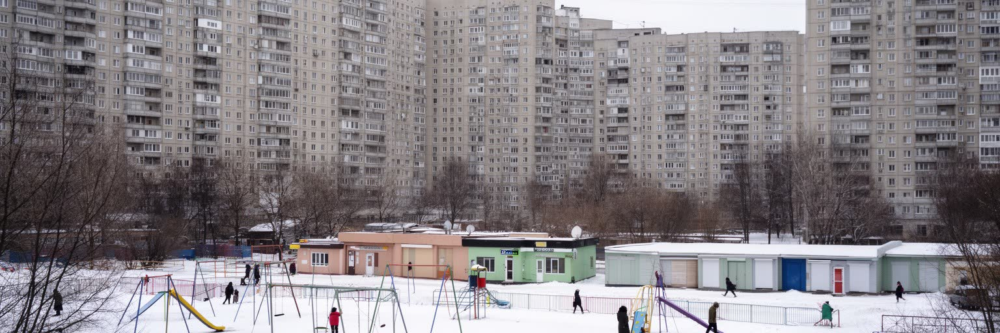
モスクワの生活は、赤の広場や中心業務地区だけでなく、広大な郊外団地と新興住宅地によって支えられています。ソ連期の集合住宅は、標準化された間取り、学校、商店、診療所、緑地を組み合わせ、労働者家族の生活単位をつくりました。現在は古い団地の更新、高層住宅の建設、郊外鉄道沿線の開発、商業施設の増加が進み、選択肢は広がる一方、通勤距離や住宅費の負担も増しています。中心部の地価が上がるほど、若い家族や移民労働者は外側へ押し出されやすいです。団地の中庭では子どもがそりや遊具で遊び、祖父母世代はベンチ、薬局、近所の食料品店を頼りに冬を越します。学校への道、塾、音楽教室、スポーツクラブは家族の時間割を細かく決め、高齢者の通院や買い物はエレベーターと除雪の状態に左右されます。老朽化した建物では断熱、配管、暖房が生活の質を左右します。郊外は単なる寝床ではなく、地域市場、教会、モスク、学校、小さなサービス業が育つ生活圏です。週末には大型モールで衣料品や家電を選ぶ家族もいれば、屋台や小商店で日々の食材を買い足す住民もいます。新しい高層住宅は快適さを売り物にするが、学校や診療所、道路が追いつかない地域では不便が残ります。中庭の雪の音や階段室の暖房の匂いは、巨大都市の中で住民が顔見知りの生活を保つ感覚的な記憶でもあります。
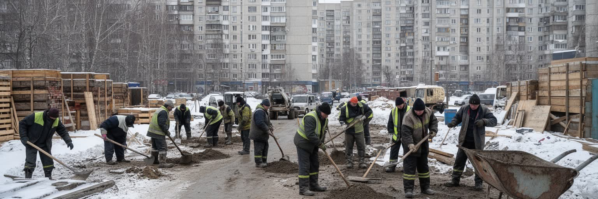
モスクワの建設現場、清掃、配送、警備、飲食、市場、住宅管理には、中央アジアやコーカサス、ロシア国内の地方から来た多くの労働者が関わっています。巨大都市の成長は高所得専門職だけでは成り立たず、低賃金で不安定な仕事が道路、住宅、商業施設、公共空間を動かしています。移民労働者は送金で出身地の家族を支え、休日には市場、礼拝所、食堂、公園に小さな共同体をつくります。ダニーロフスキーなどの市場や駅前の売店では、中央アジアのパン、ジョージア料理、香草、果物、温かいスープの匂いが混ざります。値切り、現金、小さな屋台、宅配アプリ、夜の清掃は、公式統計に出にくい路上経済を形づくります。一方で、登録、滞在資格、警察の検問、雇用主への依存、賃金未払い、差別は深刻な問題です。市場の声、建設現場の音、深夜の配送、雪かきの作業は、モスクワが多民族都市であることを日々示します。食堂のテレビやスマートフォンの通話は、出身地のニュースと首都の生活をつなぎます。言語の違いは学校、医療、役所の手続きで壁になり、子どもの教育や家族帯同にも影響します。豊かな中心部の快適さを評価するなら、それを保つ労働条件、住環境、法的保護を同じ地図に置かなければなりません。移民の暮らしを読むことは、首都の便利さが誰の不安定な時間に支えられているかを問うことでもあります。
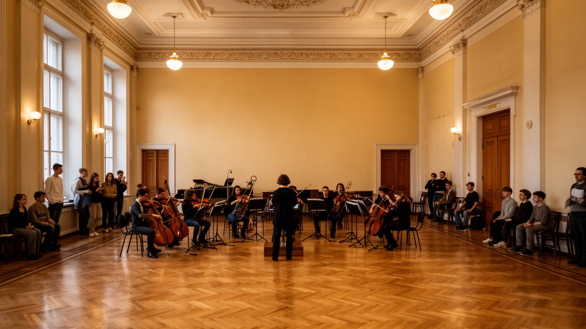
モスクワは政治と金融の街であるだけでなく、劇場、音楽院、美術館、映画、文学、大学、研究機関が集まる知的な首都でもあります。ボリショイ劇場、モスクワ音楽院、トレチャコフ美術館、文学ゆかりの街区、大学キャンパスは、ロシア文化の国際的な顔をつくってきました。夕方の劇場前では毛皮の襟、花束、タクシーの灯りが重なり、終演後の地下鉄にはクラシック帰りの客とライブハウスへ向かう若者が同じ車両に乗ります。学生や研究者、俳優、音楽家、出版関係者、映像制作者は、資金、検閲、国際交流の制約とも向き合います。戦争と制裁は共同研究、留学、展示、映画配給、音楽公演に影響しますが、読書会、小劇場、現代美術、独立系の音楽、オンライン教育も続きます。学校の発表会、音楽教室、バレエの稽古、大学受験の準備は、文化首都の名声を家庭の時間に引き込みます。夜のバーや小さなクラブでは、ロック、電子音楽、ヒップホップが控えめに鳴り、政治の硬い空気とは別の都市感覚をつくります。教育の集中は若者を地方から引き寄せ、卒業後の雇用や住宅需要を生む一方、首都と地方の機会格差を広げます。文化は豪華な劇場の客席だけでなく、学生寮、図書館、リハーサル室、出版社、カフェで育ちます。権力に近い都市で芸術がどのように自由を確保し、どこで沈黙を選ぶのかを見ることは、首都の精神的な輪郭を読むことでもあります。
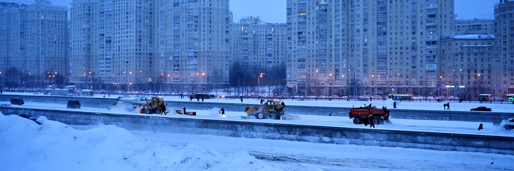
モスクワの気候は湿潤大陸性で、冬は長く寒く、雪と凍結が交通、住宅、労働、観光に影響します。暖房網、除雪、地下道、厚い衣服、屋内商業施設、地下鉄の近さは、寒冷都市で暮らすための基本的なインフラです。寒さは都市を止めるだけではなく、冬の市場、屋外スケート、イルミネーション、劇場通い、温かいボルシチやジョージア料理の湯気といった季節の文化もつくります。ルジニキ周辺や公園のリンクでは子どもが滑り、サッカーやアイスホッケーの試合日はCSKA、スパルタク、ディナモの色が地下鉄に流れます。一方で、屋外労働者、低所得世帯、高齢者、古い住宅に住む人にとっては、暖房費、滑りやすい歩道、長い通勤が大きな負担になります。学校の休み時間は濡れた長靴と手袋でいっぱいになり、病院や薬局へ向かう高齢者には、除雪の遅れがそのまま外出の難しさになります。市場の屋根から落ちる雪、焼き栗や紅茶の湯気、凍ったバス停の沈黙は、冬の街を感覚として残します。夏は短いが湿度と暑さが増し、近年は熱波や豪雨、森林火災の煙も意識されます。河岸公園や街路樹、緑地の整備は余暇だけでなく、暑熱と排水を和らげる役割を持ちます。季節の変化は観光の表情を変えるだけでなく、都市を維持する労働の重さと、寒さへの備えの差をはっきり見せます。毎冬の現実です。
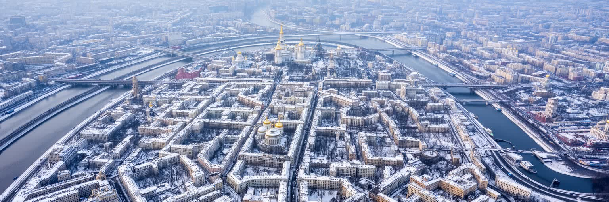
モスクワは、経済規模、人口、観光名所だけで説明できる都市ではありません。クレムリンを中心にした国家権力、放射環状の都市構造、モスクワ川、鉄道と地下鉄、エネルギー企業と金融、正教の復興、ソ連期の記憶、郊外団地、移民労働、芸術教育、冬の気候、戦争と制裁が重なっています。中心部の壮麗な建築は首都の威信を示すが、その背後では長い通勤、住宅更新、情報統制、所得格差、徴兵への不安、国際的な孤立が日常に影を落とします。観光客にとっては赤の広場や地下鉄駅の美しさが強く残りますが、住民にとって都市は仕事、家族、冬の移動、政治的な沈黙、文化への誇りが混ざる生活の場です。モスクワを読むには、権力の象徴を眺めるだけでなく、誰がその都市を掃除し、建て、動かし、語り、何を語れずにいるのかを考える必要があります。帝国、革命、戦争、資源経済、現代の管理国家が同じ街路に刻まれているため、モスクワはロシアという国の強さと不安を最も濃く映す都市であり続けています。外から見える重厚な首都像と、住民が感じる家賃、通勤、教育、医療、軍事化の圧力には差があります。その差を意識すると、モスクワは威信の舞台であるだけでなく、多くの人が慎重に暮らしを組み立てる複雑な生活圏として立ち上がります。美しい駅や聖堂を歩く時も、その背後にある不平等、沈黙、労働、冬の負担を忘れない視点が必要です。